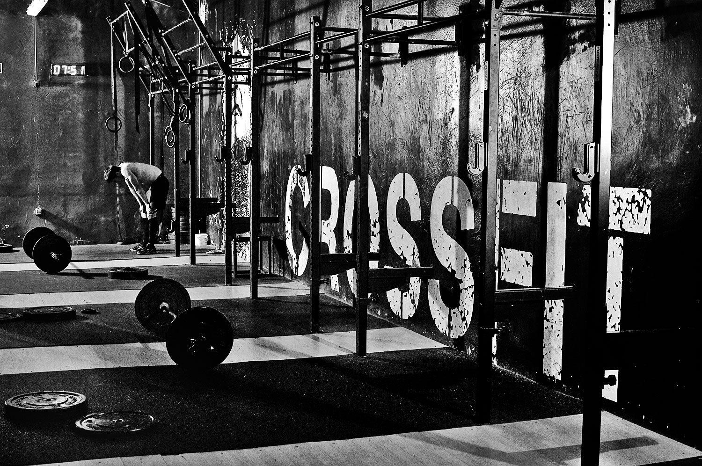

CROSSFIT
WHAT IS CROSSFIT?
THE KEY TO HEALTH AND FITNESS
"CrossFit is a lifestyle characterized by safe, effective exercise and sound nutrition.
CrossFit can be used to accomplish any goal, from improved health to weight loss to better performance.
The program works for everyone — people who are just starting out and people who have trained for years.

THE WORKOUTS
"The magic is in the movement. CrossFit workouts are different every day and can be modified to help each athlete achieve their goals.
The workouts may be adapted for people at any age and level of fitness."
- CROSSFIT BENEFITS
- building muscle strength and stamina
- improving your flexibility and agility
- burning calories
- upping your mental strength
Crossfit:Bottom Line
Like most other exercise routines, CrossFit has advantages and concerns. The workouts are fast-paced, challenging, and constantly varied.
If you are healthy and can endure grueling workouts, then give it a try. You will probably enjoy it, just like most “Crossfitters.”
If you are out of shape or just beginning an exercise program, be sure to join a CrossFit affiliate to receive the appropriate personalized attention.
Check with your health care provider before starting any new fitness program, especially if you are not active now.